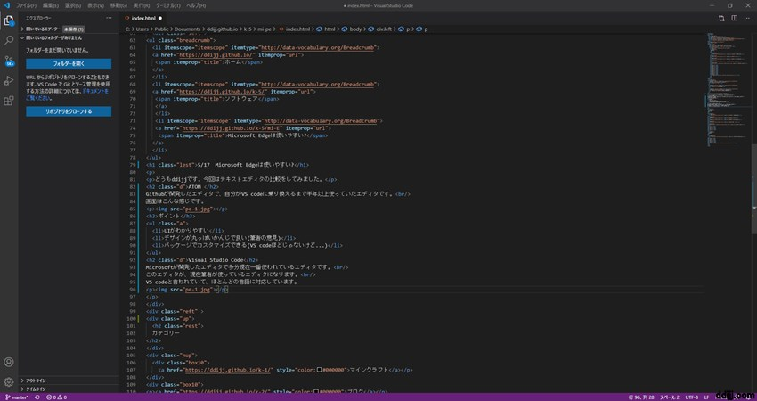

10/25 使いやすいテキストエディタは？
どうもddijjです。今回はテキストエディタの比較をしてみました。
ATOM
Githubが開発したエディタで、自分がVS codeに乗り換えるまで半年以上使っていたエディタです。
画面はこんな感じです。
ポイント
- UIがわかりやすい
- デザインが丸っぽいかんじで良い(筆者の意見)
- パッケージでカスタマイズできる(VS codeほどじゃないけど...)
Visual Studio Code
Microsoftが開発したエディタで多分現在一番使われているエディタです。
このエディタが、現在筆者が使っているエディタになります。
VS codeと言われていて、ほとんどの言語に対応しています。
画面はこんな感じです

ポイント
- 数多くの拡張機能があり自分だけのエディタを作れる
- 拡張機能をインストールすればコンパイルなどもできる
- 多くの人が使っているからネット上に情報が多く出回っている
- Gitやコマンドラインをエディタの中で使える
- Microsoft製
Brabckets
Abobeが開発した。HTML・CSS・javascript用のエディタです。
筆者はこの記事を書くためだけにインストールしました。
画面はこんな感じです
ポイント
- HTMLやCSS、Javascriptに特化した機能がある
- 拡張機能で使いやすくできる
Sublime Text
jon skinnerさんが開発したpython,C++中心のエディタです。
こっちも筆者がこの記事を書くためだけにインストールしました。
画面はこんな感じです
ポイント
- pythonで拡張を記述できる
- Chromeのような見た目をしている
最後に
今回も見てくれてスパシーバございました！